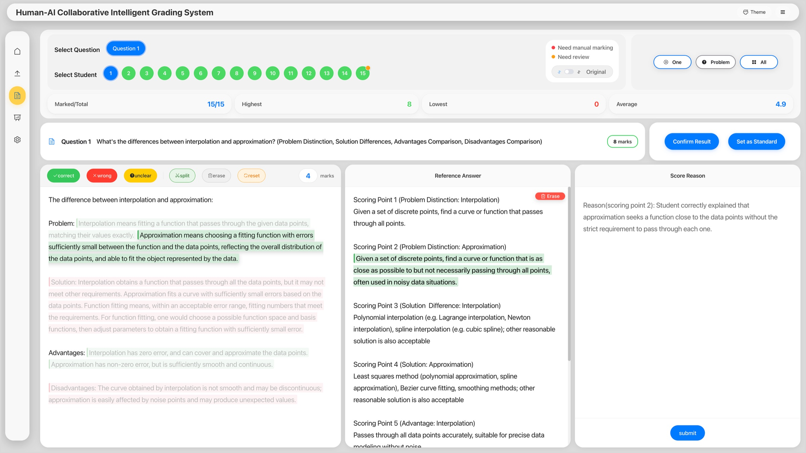

Open-ended Structured Question Assessment with Human–LLM Collaboration
1South China University of Technology 2University of Waterloo *Corresponding author
Grading an open-ended answer means finding every scoring point hidden in free-form text. VeriGrader has an LLM segment each response, align every piece with the rubric and explain each call, then puts the instructor in charge of every mark.
less grading time per response than manual grading (3.82 → 1.67 min)
grading accuracy (F1), up from 86.3% when grading by hand
inter-rater agreement (κw), vs. 0.485 for human graders alone
experienced graders (teaching assistants) on real in-class quiz answers

Scores alone are not enough. VeriGrader shows instructors exactly which piece of each answer earned or lost every point, and turns their corrections into better grading for the rest of the class.
Open-ended Structured Questions (OSQs) assess not only students’ knowledge but also their reasoning and expression. However, grading OSQs requires fine-grained, scoring-point-level analysis, which is labor-intensive and difficult to scale. Although recent LLM-based and human–AI collaborative grading systems improve efficiency, they mainly operate at the whole-response level and lack support for point-level inspection, correction, and feedback integration.
We present VeriGrader, a novel human–AI collaborative system for OSQ grading. It combines chain-of-thought prompting with scoring-point- and response-level in-context learning to enable interpretable LLM grading and iterative refinement from instructor feedback. A coordinated multi-view interface supports efficient verification of response segments, matched scoring points, and rationales. We evaluate VeriGrader using real course data and a user study with 12 participants. Results show that VeriGrader improves grading efficiency, accuracy, and consistency over the baselines, demonstrating the effectiveness of VeriGrader and promoting human–AI collaboration in educational assessment.
The video loads from YouTube when you press play.
@inproceedings{lin2026verigrader,
author = {Lin, Fengyan and Lin, Yanna and Cao, Kai and Deng, Zikun and Cai, Yi},
title = {Open-ended Structured Question Assessment with Human-LLM Collaboration},
booktitle = {Proceedings of the 2026 CHI Conference on Human Factors in Computing Systems},
series = {CHI '26},
pages = {1--21},
publisher = {ACM},
year = {2026},
doi = {10.1145/3772318.3791034}
}